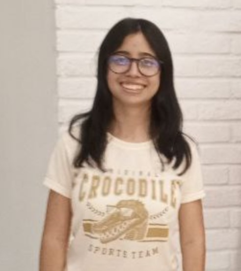

Soy estudiante de la Licenciatura en Computación. Me gusta resolver problemas y trabajar en el desarrollo backend, donde puedo enfocarme en la lógica, la estructura de los sistemas y la eficiencia del código.